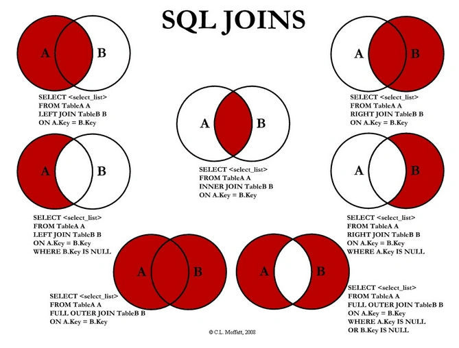

7. Joins, Combinations
Built-In Functions in SQL
In SQL, several built-in functions and operators help refine queries and comparisons. Below are some of the most commonly used ones:
1. EXISTS
Definition: Checks whether a condition (or subquery) returns any rows.
Return Type: Boolean (TRUE if the subquery returns at least one row, FALSE otherwise).
2. ANY and SOME
Definition: These two keywords are interchangeable. They check if a certain property of one object (a value, column, etc.) appears in any row of a specified subquery.
- If at least one row in the subquery meets the condition, the result is TRUE.
- If no rows meet the condition, the result is FALSE.
Example:
SELECT *
FROM Students AS S
WHERE S.Id = ANY(
SELECT SC.Id_Student
FROM S_Cards AS SC
);This query returns all students (S) whose Id matches any student IDs found in the S_Cards table.
3. ALL
Definition: Checks if a given property compares favorably to every element in a subquery set.
This is typically used when you want to find rows that surpass or are less than all values in another set.
Example:
SELECT B.[Name], B.[Pages]
FROM Books AS B
WHERE B.[Pages] < ALL(
SELECT Books.Pages
FROM Books, Press AS P
WHERE Books.Id_Press = P.Id
AND P.Id = 2
);Here, we retrieve all books whose Pages count is less than the Pages count of every book published by the press with Id = 2.
Combining Multiple Tables (Joins)
When working with multiple tables, joins are generally more efficient and clearer than using WHERE clauses for cross-table filters. Different types of joins let you control how rows from two (or more) tables are matched and combined.
- INNER JOIN
Returns rows present in both tables (the intersection).
- LEFT JOIN or LEFT OUTER JOIN
Returns all rows from the left table (the first one listed), with matching rows from the right table. Rows in the left table with no match in the right table will appear with NULL values for right-table columns.
- RIGHT JOIN or RIGHT OUTER JOIN
Returns all rows from the right table (the second one listed), with matching rows from the left table. Rows in the right table with no match in the left table will appear with NULL values for left-table columns.
- FULL OUTER JOIN
Returns all rows from both tables, matching them up where possible. Rows without a match end up with NULL values in columns from the other table.
- CROSS JOIN
Performs a Cartesian product, pairing every row of the left table with every row of the right table. This typically results in a much larger dataset and can be filtered further with a
WHEREclause if needed.
Example:
SELECT *
FROM Books AS B
INNER JOIN Authors AS A
ON B.Id_Author = A.Id;The condition ON B.Id_Author = A.Id ensures we only get rows where a book’s Id_Author matches an author’s Id.
{kind=link}

Horizontal/Vertical Combinations
Sometimes you need to combine entire result sets vertically (stacking rows) or refine them by removing or intersecting rows:
1. UNION
Combines the result sets of two (or more) SELECT statements vertically and removes duplicate rows by default. All SELECT statements must have the same number of columns and compatible data types.
2. UNION ALL
Similar to UNION but keeps duplicates. It is faster because it does not remove duplicates.
3. EXCEPT
Returns rows from the first query that do not appear in the second query. Useful for finding items in set A that are absent from set B.
4. INTERSECT
Returns rows that exist in both queries. Useful for finding the common elements in two sets.
Example: Combining Queries with Set Operations
-- UNION Example
SELECT Name FROM Books
UNION
SELECT Name FROM Magazines;
-- EXCEPT Example
SELECT Name FROM Books
EXCEPT
SELECT Name FROM OutOfPrintBooks;
-- INTERSECT Example
SELECT Author FROM Books
INTERSECT
SELECT Author FROM Articles;Reference
The content in this document is based on the original notes provided in Azerbaijani. For further details, you can refer to the original document using the following link:
Original Note - Azerbaijani Version